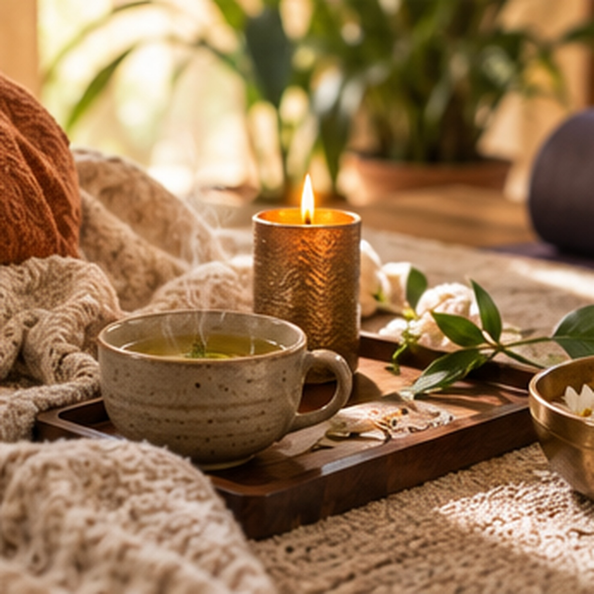
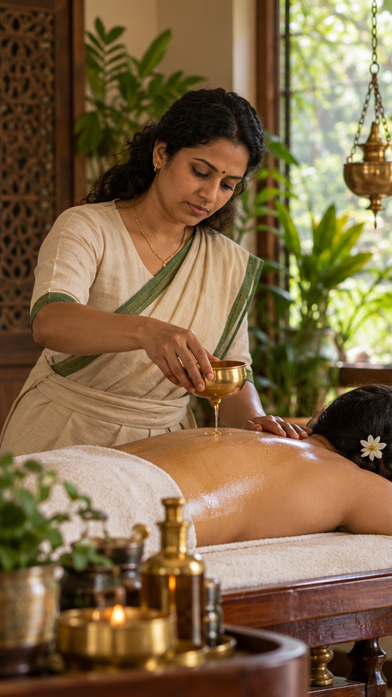

Alimentación
Aprendé a observar tus elecciones de comida y a construir una relación más atenta con ellas.
AYURVEDA SIVAPRIYA · FERNANDA TILLI
Formaciones, talleres y consultas para explorar la alimentación, las rutinas y el bienestar desde una mirada ayurvédica.
Un espacio de aprendizaje para personas de Latinoamérica.
FORMACIÓN Y TALLERES
Conocé las propuestas y elegí por dónde empezar. Los programas, modalidades y aranceles se confirman con Fernanda.
Propuestas ilustrativas para mostrar cómo se vería la plataforma. Contenidos y condiciones pendientes de confirmar.
APRENDER PARA APLICAR
Aprendé a observar tus elecciones de comida y a construir una relación más atenta con ellas.
Acercate a los fundamentos del Ayurveda con propuestas para seguir profundizando.

Explorá pausas, descanso y hábitos que puedan acompañar tu bienestar.
CONSULTAS AYURVÉDICAS
Fernanda Tilli ofrece consultas ayurvédicas para conversar sobre alimentación, rutinas y estilo de vida. Escribile para conocer la modalidad y encontrar un espacio que se adapte a vos.
Consultar por WhatsAppLa consulta ayurvédica es complementaria y no reemplaza diagnósticos ni tratamientos médicos o psicológicos.

escucha · hábitos · bienestarUNA MIRADA INTEGRAL
Ayurveda es una tradición de la India que observa la relación entre alimentación, descanso, movimiento y hábitos diarios. En Sivapriya, esos temas se convierten en preguntas, aprendizaje y herramientas para conocerte mejor.
Explorar cómo comés, tus horarios y lo que te hace bien en tu contexto.
Observar el ritmo de cada día y hacer lugar para pausas sostenibles.
Conocer prácticas de bienestar que pueden acompañar momentos de tensión o ansiedad, sin reemplazar la atención profesional.
PREGUNTAS FRECUENTES
Si tenés una duda sobre una formación o consulta, Fernanda puede orientarte.
La propuesta busca llegar a personas de Latinoamérica. Consultá la modalidad y los medios de pago disponibles para tu país.
Depende de la propuesta. En el programa de cada formación se detallarán los contenidos y requisitos antes de inscribirte.
Escribile a Fernanda por WhatsApp para recibir la información actualizada de la propuesta que te interesa.
No. El acompañamiento ayurvédico es complementario y no sustituye la evaluación ni el tratamiento de profesionales de la salud.
AYURVEDA SIVAPRIYA
Preguntá por formaciones, talleres o consultas y encontrá la propuesta para vos.
Escribirle a Fernanda